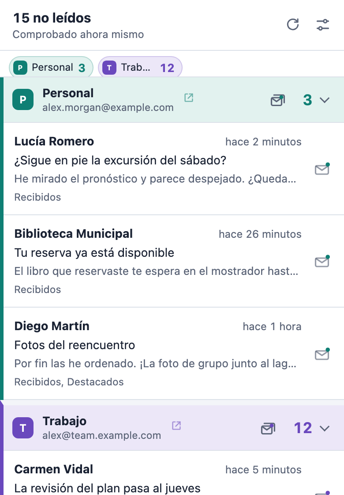

Tu correo nuevo,
de un vistazo.
Número de no leídos en la barra de herramientas y notificaciones de escritorio para cada cuenta de Gmail con la que hayas iniciado sesión en Chrome. Sin inicios de sesión extra, sin OAuth y sin servidor.
Gratis y de código abierto. Disponible en 8 idiomas.

 4
4Tú decides qué importa
Asigna a cada bandeja, pestaña, Destacados, Importantes o cualquiera de tus etiquetas uno de tres niveles. Pruébalo aquí: el icono y la notificación siguen tus elecciones, igual que la vista previa en directo de la página de configuración.
- DesactivadoNo se comprueba
- ContarSe suma al número de no leídos del icono de la barra de herramientas
- NotificarSe cuenta y además muestra una notificación de escritorio
Lo que verás
 4
4Varios buzones, bien diferenciados
Cada cuenta de Gmail con la que has iniciado sesión en Chrome se detecta sola y tiene su propia sección en la lista.
Un nombre, un color y un sonido para cada uno
Distingue los buzones de un vistazo, y de oído cuando llega una notificación.
Un total o un número por buzón
Muestra 15 en el icono, o 3/12 para ver cada buzón por separado.
Tus etiquetas, elegidas de una lista
Las etiquetas se leen del propio Gmail, así que nunca tienes que escribir su nombre.
Actúa sin abrir Gmail
Gestiona el correo nuevo estés donde estés en Chrome.
Marca como leído desde la notificación
Un clic en la notificación y el mensaje también queda leído en Gmail.
Vacía un buzón entero
Marca como leídos todos los mensajes de un buzón de una vez, tras una confirmación rápida.
Abre el mensaje correcto
Al hacer clic en un mensaje se abre en la cuenta de Gmail adecuada, reutilizando una pestaña de Gmail abierta.
Privado desde el diseño
Pigeon Post usa la sesión de Gmail que ya tienes en Chrome. No hay que crear ninguna cuenta ni iniciar sesión en nada más.
Solo se comunica con mail.google.com
Sin servidor, sin analíticas, sin anuncios y sin rastreo. Nunca se envía nada al desarrollador.
El correo se queda en memoria
Los remitentes, asuntos y fragmentos del correo sin leer se guardan solo en memoria y se borran al cerrar Chrome.
Lee solo lo necesario
Lee el feed de correo sin leer de Gmail, nunca los mensajes completos, y no cambia nada salvo marcar como leído cuando se lo pides.
Código abierto
Todo el código está en GitHub con licencia GPL-3.0, así que puedes comprobar exactamente qué hace.
Empieza en un minuto
Añádelo a Chrome
Instala Pigeon Post desde Chrome Web Store.
Mantén abierta tu sesión de Gmail
Cada cuenta de Gmail con la que has iniciado sesión en Chrome se detecta sola.
Elige lo que importa
La página de configuración se abre al instante. Elige qué se cuenta y qué te avisa.

Mantén Pigeon Post gratis
Pigeon Post no tiene anuncios, ni rastreo, ni versión de pago. Si te ahorra tiempo, un bubble tea o una pequeña aportación me ayuda a mantenerlo al día con cada cambio de Gmail y Chrome, y a crear lo siguiente.
El bubble tea se paga con tarjeta, sin cuenta de PayPal.